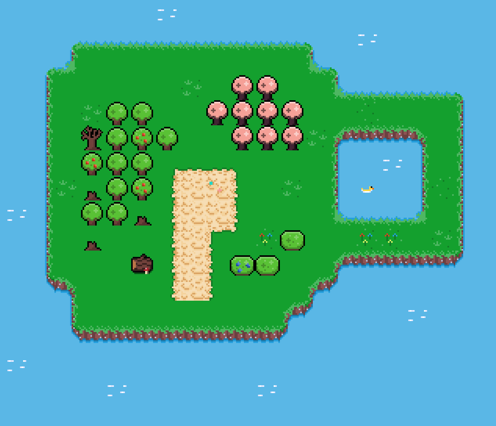
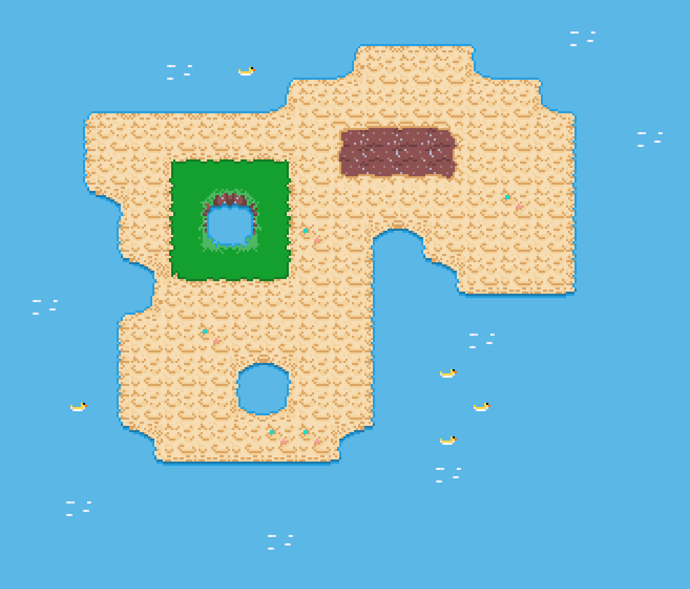

About Me
Hey, I’m Jordan Unzaga, a Computer Science major at Montana State University focused on building practical software systems. My work this year has centered on robotics, backend development, ETL validation, and interactive software.
I’ve worked with Python, Java, SQL, JavaScript, PHP, and Linux-based tools across projects involving robot control, web applications, data pipelines, debugging, and game systems.
Skills
I enjoy building systems that are reliable, interactive, and easy to use. Outside of coursework, I also like creative technical work including game design and pixel art. You can check out my work through the Projects page.
Pixel Art Showcase
I design pixel art tilesets, scenes, and small maps; here are a few examples of my recent work.

